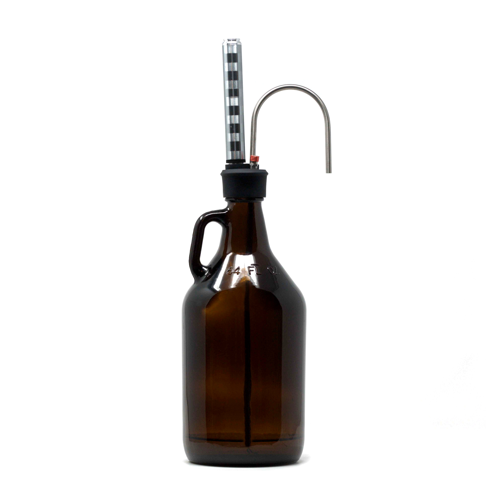

Growlers
Juste au cas où tu te demanderais...
Qu'est-ce qu'un Growler?
Un growler ('grau̇-lər) est un pot en verre, en plastique ou en métal qui peut être rempli de votre bière préférée à emporter.
La taille typique est de 64 onces (1,89 litres), mais vous pouvez en trouver de plus grandes ou plus petites avec des formes différentes.
Ils doivent toujours être nettoyés à fond avant le remplissage, généralement à la brasserie ou au point de remplissage.
Les Growlers sont la meilleure alternative pour acheter de la bière artisanale locale et en profiter à tout prix, avec le plus faible impact environnemental.
